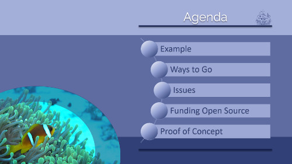
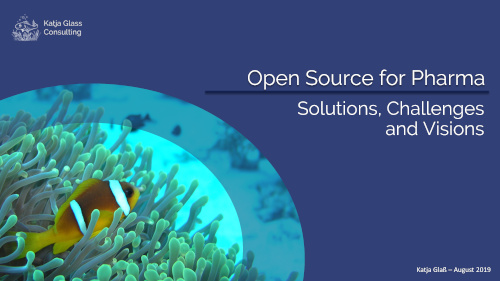
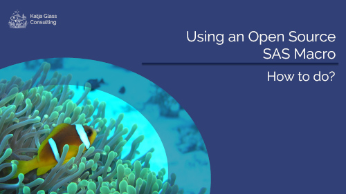
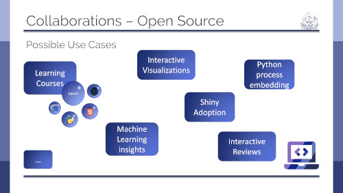
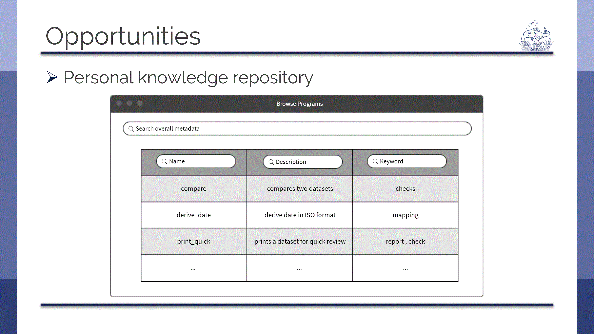

Want to get a very quick overview of open source collaboration options? Checkout this presentation!
(2 minutes, 4MB)
This presentation will give you an more detailed overview on collaborations and open source.

(7 minutes, YouTube)
Overview on what open source solutions are available, which challenges they face – documentation and financing are the most important – and how the future could look like.

(17 minutes, YouTube)
How to find an Open Source SAS Macro and how to apply it to your own problems and data? This video shows you a way.

(33 minutes, YouTube)
This recording from the PhUSE Bitsize Webinar 2020 shows how the Open Source Route could be used for Clinical Data Science.

(30 minutes, YouTube)
This recording from the PhUSE SDE shows how to make source code FAIR, concentrating on making this findable by creating a program knowledge repository.

(28 minutes, YouTube)